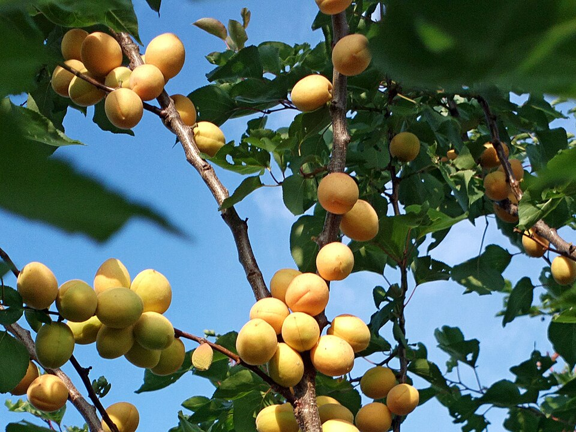
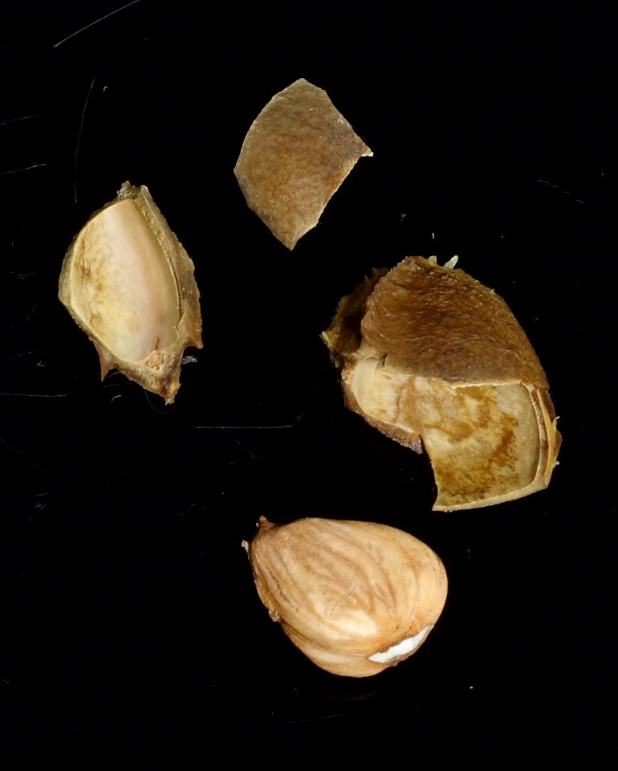

Kǔ Xìng Rén · Bitter Apricot Seed苦杏仁
Armeniacae Semen Amarum · Herbs that transform phlegm, relieve cough and calm wheezingArmeniacae Semen Amarum · 化痰止咳平喘药

.jpg){kind=link}


- Flavour · nature性味
- bitter; slightly warm苦，微温
- Channels归经
- Lung, Large Intestine肺、大肠经
- Direction升降浮沉
- Its bitter flavour promotes downward drainage. It primarily enters the Lung channel, directing Lung qi downward to relieve cough and wheezing. It also enters the Large Intestine channel and moistens the bowels.苦能降泄，主入肺经，以下降肺气、止咳平喘为主要特点；兼入大肠经，润肠通便。
- Toxicity毒性
- Mildly toxic小毒
- Dose (pharmacopoeia)用量（药典）
- 5–10 g (ceiling 10 g)（上限 10 克）
Decocted at 5–10 g. The kernels should be crushed before decoction. This pharmacopoeial range applies to properly processed medicinal material used in clinical practice; it must not be used as a guide for eating raw apricot kernels or substituting food quantities for medicinal doses. Bitter apricot kernels are slightly toxic and require strict dose control. A change in taste or appearance after processing does not establish that the toxic constituents have disappeared.煎服，5–10 克。宜打碎后入煎剂。药典用量针对规范炮制、临床使用的饮片，不适用于自行食用生杏仁或直接以食物用量替代药用剂量。苦杏仁有小毒，必须严格控制用量，不可因味苦或加工后外观改变而判断毒性已经消失。 - Pregnancy孕期
- Caution in pregnancy孕妇慎用 Bitter apricot kernels contain cyanogenic glycosides and are slightly toxic. The 2020 Chinese Pharmacopoeia warns only against overdose and lists no pregnancy restriction. Health Canada's TCMI monograph dated May 29, 2026, requires every product it covers to warn against use during pregnancy and breastfeeding. Because the kernel is slightly toxic, contains cyanogenic glycosides and lacks pregnancy safety data, this site is strict: do not self-administer it while pregnant or breastfeeding.苦杏仁含氰苷类成分，有小毒。《中国药典》2020 年版苦杏仁项下「注意」只写内服不宜过量、以免中毒，未列孕期条。加拿大卫生部 2026 年 5 月 29 日 TCMI 专论对全部收录产品统一要求标注孕期及哺乳期勿用。苦杏仁有小毒、含氰苷，孕期安全资料又不足，本站从严：孕期与哺乳期不要自行使用。
- Health Canada加拿大卫生部
- Health Canada: monograph加拿大卫生部：有专论 Health Canada's Natural Health Products Ingredients Database includes bitter apricot kernel in its Traditional Chinese Medicine Ingredients monograph dated May 29, 2026. It lists three botanical sources: Prunus armeniaca var. ansu, Prunus armeniaca and Prunus sibirica. The listed common names are Ku Xing Ren and Tian Xing Ren, and the Latin medicinal ingredient name is Semen Armeniacae Amarum. All three species are listed under Table 3 and are allowable only when prepared and used according to the NHPID specifications. They are not unrestricted Table 4 ingredients. The monograph requires all relevant products to carry warnings stating that they must not be used during pregnancy or breastfeeding; people taking prescription medicines or living with serious illness or acute infection must consult a healthcare professional before use; and use must be discontinued with medical advice sought if symptoms persist or worsen. Monograph inclusion establishes ingredient-specific regulatory conditions; it does not mean that every bitter apricot kernel product has received authorization for sale in Canada.加拿大卫生部天然保健品成分数据库 NHPID 的传统中药成分专论（TCMI，2026 年 5 月 29 日）收录苦杏仁相关药材，列出三个来源物种：Prunus armeniaca var. ansu、Prunus armeniaca 和 Prunus sibirica，药材名称为 Ku Xing Ren、Tian Xing Ren，拉丁药材名为 Semen Armeniacae Amarum。三个物种均列入 Table 3，只有按照 NHPID 专论规定的制备和使用条件才允许使用，不属于可不受限制使用的 Table 4 类别。专论要求所有相关产品标注以下风险语：孕期或哺乳期勿用；正在服用处方药、有严重疾病或急性感染者，使用前咨询医务人员；症状持续或加重时停止使用并就医。专论收录代表存在相应成分和使用条件的监管资料，不等于所有苦杏仁产品均已获加拿大上市许可。
- Conservation资源与保护
- Bitter apricot kernels are derived from Prunus species. The botanical sources listed here are not among prohibited or strictly internationally trade-controlled endangered animal-derived medicines such as rhinoceros horn, tiger bone, pangolin scales or musk. Use medicinal material with documented botanical origin and pharmacopoeial quality, and avoid misidentified kernels or products of uncertain origin.苦杏仁来源于杏属植物，目前本条所列来源未涉及犀角、虎骨、穿山甲、麝香等禁用或受严格国际贸易管制的濒危动物药材。应使用来源清楚、符合药典质量标准的药材，避免误采、误购其他杏属种仁或来源不明的种仁。
- Source来源
- Prunus armeniaca L.; Prunus sibirica L.; Prunus mandshurica (Maxim.) Koehne; Prunus armeniaca var. ansu Maxim.. The dried mature kernels of apricot species in the rose family, including Prunus armeniaca, P. sibirica, P. mandshurica and P. armeniaca var. ansu, collected after removal of the fruit flesh and hard shell. The medicinal part is the kernel, not the fruit flesh.Prunus armeniaca L.；Prunus sibirica L.；Prunus mandshurica (Maxim.) Koehne；Prunus armeniaca var. ansu Maxim.。蔷薇科植物山杏、杏、西伯利亚杏或东北杏的成熟种子，去除果肉及核壳后干燥入药；药用部位是种仁，不是果肉。
Toxicity: what goes wrong毒理：会出什么事
The principal toxic constituent is amygdalin, a cyanogenic glycoside. In the digestive tract, amygdalin can be broken down by beta-glucosidase and related enzymes into prunasin and mandelonitrile, ultimately releasing hydrogen cyanide. Cyanide binds to mitochondrial cytochrome c oxidase and inhibits the cellular respiratory chain, preventing tissues from effectively using oxygen and causing histotoxic hypoxia. Symptoms include headache, dizziness, nausea, vomiting, weakness, palpitations and rapid breathing. Severe poisoning can cause confusion, seizures, hypotension, respiratory failure and cardiac arrest. Actual cyanide exposure varies with the quantity consumed, kernel species, chewing and processing. A human case report published in 2011 documented acute cyanide poisoning following apricot kernel ingestion and described emergency use of hydroxocobalamin as an antidote.主要毒性成分为苦杏仁苷（amygdalin），属于氰苷。苦杏仁苷在消化道内经β-葡萄糖苷酶等作用，可逐步生成野樱苷、扁桃腈，最终释放氢氰酸。氰离子与线粒体细胞色素c氧化酶结合，抑制细胞呼吸链，使组织无法有效利用氧，形成组织性缺氧。中毒表现包括头痛、眩晕、恶心、呕吐、乏力、心悸、呼吸急促；严重时可出现意识模糊、抽搐、低血压、呼吸衰竭和心搏骤停。摄入量、种仁品种、咀嚼程度及炮制情况均会影响实际氰化物暴露量。2011 年发表的人体病例报告记录了食用杏仁核仁导致的急性氰化物中毒，急救时以羟钴胺作解毒剂。
Traditional actions and indications功效与主治（传统）
🏛 Traditional statements, not efficacy claims; the modern evidence is graded further down.以下为传统说法，不是疗效主张；现代证据见下文分级。
- Directs qi downward, relieves cough and calms wheezing降气止咳平喘
- Moistens the intestines and promotes bowel movements润肠通便
Cough and wheezing: Used for cough, wheezing, chest fullness and excessive phlegm associated with upward-rebellious Lung qi. It may be incorporated into formulas for wind-cold cough, wind-heat cough, dry cough and Lung-heat wheezing according to the pattern. Intestinal dryness and constipation: Used for dry stools and difficult bowel movements associated with insufficient body fluids and inadequate intestinal lubrication.咳嗽气喘：适用于肺气上逆所致咳嗽、气喘、胸满痰多，可用于风寒咳嗽、风热咳嗽、燥咳及肺热咳喘等证，常随证配伍其他药物；肠燥便秘：适用于津液不足、肠道失润所致大便干燥、排便困难。
How to recognise it怎么认
Growing植株 The apricot is a deciduous tree in the genus Prunus of the rose family, generally about 5–12 m tall. Its bark is dark grey-brown, older branches are relatively stout, and young branches are often reddish brown. The leaves are alternate, broadly ovate or nearly rounded, with tapering tips, finely serrated margins and relatively long petioles. Flowers appear in early spring, before or together with the leaves. They are usually solitary, with five white to pale pink petals. The fruit is a nearly spherical drupe that becomes yellow to orange-yellow when ripe, often with a reddish blush. Its flesh surrounds a hard, flattened, rounded stone containing the medicinal kernel. Leaf, fruit and kernel characteristics vary among the source species, so no single external feature is sufficient to authenticate the medicinal material.杏为蔷薇科李属落叶乔木，高约 5–12 米，树皮暗灰褐色，老枝较粗，幼枝常呈红褐色。叶片互生，宽卵形或近圆形，先端渐尖，边缘有细锯齿，叶柄较长。早春先叶或与叶同时开花，花单生，通常粉白色至淡粉红色，花瓣五枚。果实为近球形核果，成熟时黄色至橙黄色，常带红晕，表面有短柔毛或近无毛，果肉内有坚硬扁圆形果核。果核内含种仁，药用苦杏仁即取自种仁。不同杏属来源植物的叶、果及种仁大小存在差异，不能只凭单一外观特征鉴定药材来源。
Decoction pieces饮片 An intact bitter apricot kernel is flattened and heart-shaped or broadly ovate, approximately 1–1.9 cm long, 0.8–1.5 cm wide and 0.5–0.8 cm thick. One end is pointed and the other rounded, with slight bilateral asymmetry. The surface ranges from yellowish brown to dark brown. A short linear hilum is visible along one side, while the chalaza can be seen toward the opposite end. The seed coat is thin and has a finely granular surface. Removing it reveals a creamy-white to pale yellow kernel. The kernel is firm and oil-rich, with a white or pale yellowish-white cut surface. Its odour is slight and its taste is bitter. Taste must never be used as a safety test, particularly for apricot kernels of uncertain origin.完整苦杏仁呈扁心形或扁卵形，长约 1–1.9 厘米，宽约 0.8–1.5 厘米，厚约 0.5–0.8 厘米；一端尖，另一端钝圆，左右不完全对称。表面黄棕色至深棕色，一侧有短线形种脐，另一端可见合点，基部有时可见深色合点痕迹。种皮薄，外表有细微颗粒状纹理；剥去种皮可见乳白色至淡黄色的种仁。种仁富含油脂，质坚实，断面白色或淡黄白色，富油性。气微，味苦。不得通过尝味鉴别来判断药材是否安全，尤其不可试吃来源不明的杏仁。
No photo confirmed as bitter kernels; the kernel shown cannot be told apart from sweet ones.缺能确认是苦杏仁的药材照；现有杏核种仁分不出苦甜。
Processing炮制
- Bitter Apricot Seed苦杏仁：: The medicinal kernels are separated from the hard shells and cleaned of impurities. They should be crushed before use. Raw kernels retain substantial amygdalin, and the risk of cyanide exposure must not be overlooked.原药材除去杂质及硬壳，取种仁入药。使用时宜打碎。生品保留较多苦杏仁苷，氰化物暴露风险不可忽视。
- Blanched Bitter Apricot Seed燀苦杏仁：: The kernels are briefly blanched in boiling water, peeled and dried. Blanching facilitates removal of the seed coats and subsequent processing. It does not completely eliminate amygdalin and does not make unrestricted consumption safe.以沸水短时间烫制，除去种皮后干燥。种皮容易脱落，便于后续加工及调剂。燀制不等于彻底去除苦杏仁苷，也不能据此认为可以不限量食用。
- Stir-fried Bitter Apricot Seed炒苦杏仁：: Clean bitter apricot kernels are stir-fried according to the prescribed processing method until slightly yellow, then removed and cooled. Stir-frying changes the characteristics of the medicinal material but does not make it a non-toxic food or remove the pharmacopoeial dose restriction.取净苦杏仁，按照规范炒制方法炒至微黄色，取出放凉。炒制可改变饮片性状，但不能将其视为无毒食品或取消药典用量限制。
Cautions and incompatibilities使用注意与配伍禁忌
1. This herb is slightly toxic. Strictly follow the pharmacopoeial dose of 5–10 g and never exceed it. Do not eat raw bitter apricot kernels as snacks or prepare kernel drinks without professional guidance. 2. Accidental ingestion is particularly dangerous for children. Bitter apricot kernels must be clearly distinguished from ordinary edible sweet almonds and stored safely. 3. Pregnant and breastfeeding individuals should not use this ingredient. Health Canada's monograph explicitly requires products to carry a warning against use during pregnancy and breastfeeding. 4. Use caution in persistent cough associated with Lung deficiency or yin deficiency, and prescribe only according to the identified pattern. 5. Processing, decoction and stir-frying do not justify arbitrary increases in dosage. 6. When other cyanogenic plants or products capable of releasing cyanide are consumed at the same time, the potential total cyanide exposure deserves attention. This is a toxicological precaution, not evidence of a specific clinically established interaction. 7. People taking prescription medicines or living with serious illness or acute infection should consult a healthcare professional before use. Discontinue use and seek medical advice if symptoms persist or worsen. 8. Health Canada's monograph places all three listed species under Table 3 restrictions. They may only be prepared and used according to NHPID specifications. Inclusion in the monograph does not authorize unrestricted marketing of every form of bitter apricot kernel product.1. 本品有小毒，严格遵守药典 5–10 克用量，不得超量，不得将生杏仁作为零食或未经专业指导自行制备杏仁饮品。2. 儿童误食尤其危险，应将苦杏仁与普通食用甜杏仁明确区分并妥善存放。3. 孕妇及哺乳期妇女不宜使用；加拿大卫生部专论明确要求相关产品标注孕期、哺乳期勿用。4. 阴虚咳嗽、肺虚久咳者应慎用，须辨证配伍。5. 本品有毒性成分，炮制、煎煮或炒制均不能作为任意增加用量的理由。6. 与其他含氰苷植物或可能释放氰化物的产品同时摄入时，应特别注意潜在的氰化物总暴露量；此为毒理安全提醒，不代表已有特定临床相互作用研究。7. 服用处方药、有严重疾病或急性感染者，使用前应咨询医务人员；症状持续或加重应停止使用并就医。8. 加拿大卫生部专论收录的三个物种均有 Table 3 使用限制，必须按照 NHPID 规定的制备和使用条件使用，不可将专论收录理解为允许任意形式的苦杏仁产品上市。
Interactions with medicines与西药的相互作用
The available sources supplied for this entry do not establish specific herb–drug interactions between bitter apricot kernels and conventional Western medicines through clear human clinical evidence. The 2011 human case report concerns acute cyanide poisoning after apricot kernel ingestion and treatment with hydroxocobalamin, not an interaction between bitter apricot kernels and a conventional prescription medicine. The 2025 study involving stir-fried bitter apricot kernels and aristolochic acid I has an abstract conclusion concerning a drug-candidate investigation and liver and kidney injury, which is insufficient to establish a clinical interaction with a conventional Western medicine. Specific drug interactions must not be inferred solely from cyanide toxicology mechanisms.在本题提供的可用来源中，未找到苦杏仁与特定西药之间具有明确人体临床证据的相互作用资料。2011 年人体病例报告研究的是杏仁核仁摄入导致的急性氰化物中毒及羟钴胺解毒，并非苦杏仁与常规处方药的相互作用。2025 年关于炒苦杏仁与马兜铃酸 I 的研究，摘要结论涉及药物候选研究及肝肾损伤，不足以建立与某种常规西药的临床相互作用。不得仅凭氰化物毒理机制推断特定西药相互作用。
Modern research, graded现代研究（分级）
- E3 A 2021 human clinical study examined plasma lipid and endocrine profiles in women of reproductive age who consumed bitter apricot seeds daily. Its abstract suggests that daily apricot seed consumption may affect plasma lipid and endocrine profiles. The study involved dietary consumption of apricot seeds and does not establish a therapeutic effect of pharmacopoeial doses of medicinal bitter apricot kernels or justify recommending their routine consumption.2021 年一项人体临床研究考察了育龄女性每日摄入苦杏仁后的血浆脂质及内分泌指标。摘要结论认为，每日摄入杏仁种子可能影响女性的血浆脂质和内分泌谱。该研究对象是实际摄入的苦杏仁种子，研究结果不等于证明药典剂量的苦杏仁饮片具有临床治疗作用，也不能据此推荐日常食用。
- E3 A 2018 human clinical study investigated the relationship between long-term bitter apricot seed consumption and cardiovascular disease risk factors. Its abstract suggests that regular apricot seed intake may have potential value in cardiovascular disease prevention. This was a human dietary-consumption study and cannot be directly extrapolated into a clinical indication or a medicinal recommendation for preventing cardiovascular disease with bitter apricot kernel preparations.2018 年一项人体临床研究考察了长期摄入苦杏仁与心血管疾病危险因素之间的关系。摘要认为，规律摄入杏仁种子可能具有预防心血管疾病的潜在价值。这属于人体饮食摄入研究，不能直接外推为苦杏仁饮片的临床适应证或预防心血管疾病的用药建议。
- E5 A 2011 human case report documented acute cyanide poisoning following apricot kernel ingestion and described the use of hydroxocobalamin as an antidote. The case supports apricot kernel ingestion as a possible source of cyanide poisoning and demonstrates that suspected poisoning requires emergency medical management.2011 年人体病例报告记载了摄入杏仁核仁后发生急性氰化物中毒的病例，并报告以羟钴胺作解毒剂。该病例支持将杏仁核仁摄入列为氰化物中毒的可能来源，也说明疑似中毒属于需要紧急医疗处理的情况。
In the classics古籍原文
「杏核味甘溫。主治欬逆上氣，雷鳴，喉痹，下氣，產乳，金創，寒心，賁豚。生川谷。」——神农本草经
Shennong Bencao Jing (Divine Farmer's Materia Medica)
The Shennong Bencao Jing lists it as 'Xing He' (later usually 'Xing He Ren'), sweet and warm, for rebellious cough with upward-surging qi, rumbling, throat obstruction, directing qi downward, childbirth, metal wounds, cold in the heart and running-piglet qi. The Ben Jing does not call it toxic; 'bitter' and 'toxic' were added in the Mingyi Bielu, and today's pharmacopoeia records it as bitter, slightly warm and slightly toxic. Modern use follows the pharmacopoeia's source, processing and dose.《神农本草经》称「杏核」（后世多作杏核仁），记其味甘、温，主治咳逆上气、雷鸣、喉痹、下气、产乳、金疮、寒心、贲豚。《本经》没有说它有毒；「苦」「有毒」是《名医别录》补入的，今药典定为苦、微温、有小毒。古籍所载是历史本草记载，现代用药以药典的来源、炮制和剂量为准。
Where it is used: the web串联：它在哪些方里、连到哪里
Classical formulas (Shanghan, Jingui)经方（伤寒、金匮）
| Formula方 | Role角色 | Dose: original / today剂量：原书／今用 | Partners in the formula同方配伍 |
|---|---|---|---|
| Ephedra, Apricot Kernel, Licorice, and Gypsum Decoction麻黄杏仁甘草石膏汤 | Minister臣 | original text: see the Chinese original五十箇（去皮尖） | Máhuáng (Ephedra herb)麻黄 · Gāncǎo (Licorice root)甘草 · Shígāo (Gypsum)石膏 |
| Hemp Seed Pill麻子仁丸 | Minister臣 | original text: see the Chinese original一升（去皮尖，熬，别作脂） | Huo Ma Ren (hemp seed)火麻仁 · Báisháo (White peony root)白芍 · Dàhuáng (Rhubarb root and rhizome)大黄 · Zhǐshí (Immature bitter orange)枳实 · Hou Po (magnolia bark)厚朴 |
| Major Blue-Green Dragon Decoction大青龙汤 | Assistant佐 | original text: see the Chinese original四十枚（去皮尖） | Máhuáng (Ephedra herb)麻黄 · Guìzhī (Cassia twig)桂枝 · Shígāo (Gypsum)石膏 · Sheng Jiang (fresh ginger)生姜 · Da Zao (jujube)大枣 · Gāncǎo (Licorice root)甘草 |
| Ephedra, Forsythia and Adzuki Bean Decoction麻黄连轺赤小豆汤 | Assistant佐 | original text: see the Chinese original四十个（去皮尖） | Máhuáng (Ephedra herb)麻黄 · Lian Qiao (forsythia fruit)连翘 · Chi Xiao Dou (adzuki bean)赤小豆 · Zi Bai Pi (catalpa root bark)梓白皮 · Sheng Jiang (fresh ginger)生姜 · Da Zao (jujube)大枣 · Gāncǎo (Licorice root)甘草 |
| Ephedra Decoction麻黄汤 | Assistant佐 | original text: see the Chinese original七十个（去皮尖） 6 g | Máhuáng (Ephedra herb)麻黄 · Guìzhī (Cassia twig)桂枝 · Gāncǎo (Licorice root)甘草 |
| Ephedra, Apricot Kernel, Coix and Licorice Decoction麻黄杏仁薏苡甘草汤 | Assistant佐 | original text: see the Chinese original十个（去皮尖，炒） | Máhuáng (Ephedra herb)麻黄 · Yi Yi Ren (coix seed)薏苡仁 · Gāncǎo (Licorice root)甘草 |
Later formulas (Song to Qing)时方（宋元明清）
| Formula方 | Role角色 | Dose: original / today剂量：原书／今用 | Partners in the formula同方配伍 |
|---|---|---|---|
| Mulberry Leaf and Apricot Kernel Decoction桑杏汤 | Monarch君 | original text: see the Chinese original一钱五分 | Sang Ye (mulberry leaf)桑叶 · Sha Shen (glehnia or adenophora root)沙参 · Zhe Bei Mu (Zhejiang fritillary bulb)浙贝母 · Dan Dou Chi (prepared soybean)淡豆豉 · Zhi Zi (gardenia fruit)栀子 · Li Pi (pear peel)梨皮 |
| Three-Kernel Decoction三仁汤 | Monarch君 | original text: see the Chinese original五錢 | Huashi (talc)滑石 · Tongcao (rice-paper plant pith)通草 · Baidoukou (round cardamom fruit)白豆蔻 · Danzhuye (lophatherum herb)淡竹叶 · Houpo (magnolia bark)厚朴 · Yiyiren (coix seed)薏苡仁 · Bànxià (Pinellia tuber)半夏 |
| Mulberry Leaf and Chrysanthemum Drink桑菊饮 | Minister臣 | original text: see the Chinese original二錢 | Forsythia fruit clears heat and disperses wind-heat, supporting the exterior-releasing and heat-clearing strategy.连翘 · Bòhe (Chinese mint)薄荷 · Mulberry leaf disperses wind-heat, clears the lung, and moistens dryness. It is a principal herb addressing wind-heat affecting the lung.桑叶 · Chrysanthemum disperses wind-heat, clears the head and eyes, and supports mulberry leaf in addressing the exterior wind-heat pattern.菊花 · Platycodon root disseminates lung qi, benefits the throat, and directs the formula's actions toward the upper respiratory system.桔梗（原文作苦梗） · Gāncǎo (Licorice root)甘草 · Reed rhizome clears heat and generates fluids, addressing thirst associated with heat.芦根（原文作葦根） |
| Clear Dryness and Rescue the Lungs Decoction清燥救肺汤 | Assistant佐 | original text: see the Chinese original七分 | Sang Ye (mulberry leaf)桑叶 · Shígāo (Gypsum)石膏 · Mai Dong (ophiopogon tuber)麦冬 · Gāncǎo (Licorice root)甘草 · Rénshēn (Ginseng (Asian))人参 · Hei Zhi Ma (black sesame)黑芝麻 · E Jiao (ass-hide gelatin)阿胶 · Pi Pa Ye (loquat leaf)枇杷叶 |
Folk and single-herb remedies偏方、验方、单方
| Formula方 | Use用法 | Self-use能否自用 |
|---|---|---|
| Apricot kernel and egg white paste (facial hyperpigmentation)杏仁鸡子白方（面上皯疱） | External use外用 | Literature record only: not advised for self-use仅作文献记录，不建议自行使用 |
Patterns reached through these formulas经由这些方连到的证
- Taiyang cold damage (wind-cold exterior excess)太阳伤寒（风寒表实） ← Major Blue-Green Dragon Decoction大青龙汤, Ephedra Decoction麻黄汤
- Heat congesting the lung (cough and wheeze)邪热壅肺（肺热喘咳） ← Ephedra, Apricot Kernel, Licorice, and Gypsum Decoction麻黄杏仁甘草石膏汤Points穴位 LU5 ChǐzéLU5 尺泽 · LU10 YújìLU10 鱼际 · BL13 FèishūBL13 肺俞 · GV14 DàzhuīGV14 大椎 · LI4 HégǔLI4 合谷Qigong功法 Liuzijue (Six Healing Sounds)六字诀
- Wind-heat at the defensive level风热犯卫（温病初起） ← Mulberry Leaf and Chrysanthemum Drink桑菊饮
- Early damp-warmth with damp heavier than heat湿温初起、湿重于热 ← Three-Kernel Decoction三仁汤
Exam notes (HER)考点（HER）
HER essentials: (1) The medicinal source is the mature kernel of Prunus species in the rose family; distinguish bitter from sweet apricot kernels. (2) It enters the Lung and Large Intestine channels, is bitter and slightly warm, and is slightly toxic. (3) Its principal actions are directing Lung qi downward, relieving cough and wheezing, and moistening the intestines. (4) Its main indications are cough, wheezing and constipation due to intestinal dryness. (5) The pharmacopoeial dose is 5–10 g, with the kernels crushed before decoction; understand the release of hydrogen cyanide from cyanogenic glycosides. (6) Recognize the characteristics of blanched and stir-fried preparations. (7) Pregnancy and breastfeeding warnings, Health Canada NHPID Table 3 restrictions and mandatory product warnings. (8) Recognize cyanide poisoning and understand that hydroxocobalamin is one of the medical antidotes used for acute cyanide poisoning. (9) Distinguish human dietary-consumption studies from clinical efficacy evidence for pharmacopoeial medicinal preparations.HER 重点：①来源为蔷薇科杏属植物成熟种仁，区分苦杏仁与甜杏仁；②归肺、大肠经，苦、微温，有小毒；③功效为降气止咳平喘、润肠通便；④主治咳嗽气喘、肠燥便秘；⑤药典用量 5–10 克，宜打碎后入煎剂，注意氰苷释放氢氰酸的毒理机制；⑥掌握燀苦杏仁、炒苦杏仁等炮制品的鉴别；⑦药典未列孕期条（只写内服不宜过量），本站从严：孕期哺乳期不自行用；加拿大 NHPID Table 3 限制及产品风险警语；⑧识别氰化物中毒表现，知道羟钴胺是急性氰化物中毒的医疗解毒药物之一；⑨区分人体饮食摄入研究与药典饮片的临床疗效证据。
Sources依据
- Chinese Pharmacopoeia Commission. Pharmacopoeia of the People's Republic of China, 2020 edition, vol. I国家药典委员会《中华人民共和国药典》2020 年版一部
- Zhong Gansheng (ed.). Chinese Materia Medica (national TCM higher-education textbook series)钟赣生主编《中药学》（全国中医药行业高等教育规划教材）
- Health Canada, NHPID monograph: Traditional Chinese Medicine Ingredients (TCMI), May 29, 2026 ↗
- Kopčeková et al. Consumption of bitter apricot seeds affects lipid and endocrine profile in women. J Environ Sci Health B. 2021 ↗
- Kopčeková et al. Influence of long-term consumption of bitter apricot seeds on risk factors for cardiovascular diseases. J Environ Sci Health B. 2018 ↗
- Li et al. Stir-fried Semen Armeniacae Amarum Suppresses Aristolochic Acid I-Induced Nephrotoxicity and DNA Adducts. Chin J Integr Med. 2025 ↗
- Cigolini et al. Hydroxocobalamin treatment of acute cyanide poisoning from apricot kernels. Emerg Med J. 2011 ↗